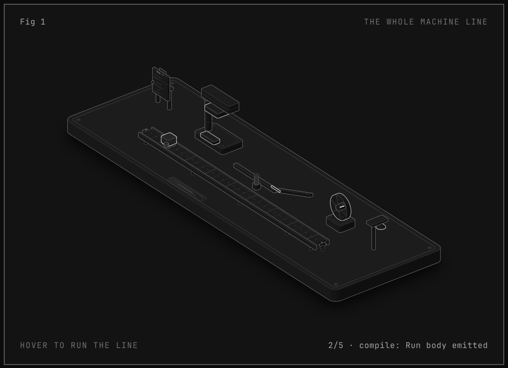
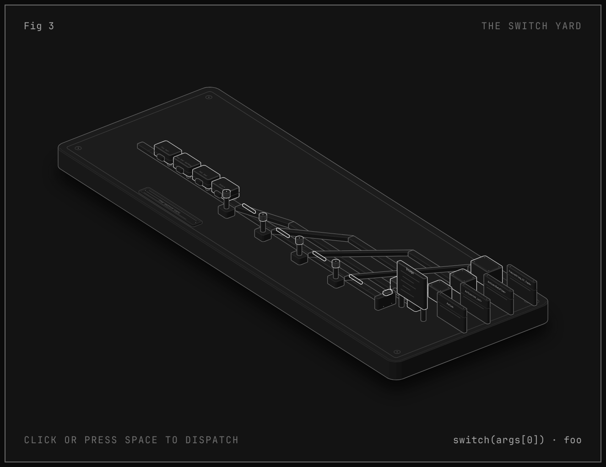
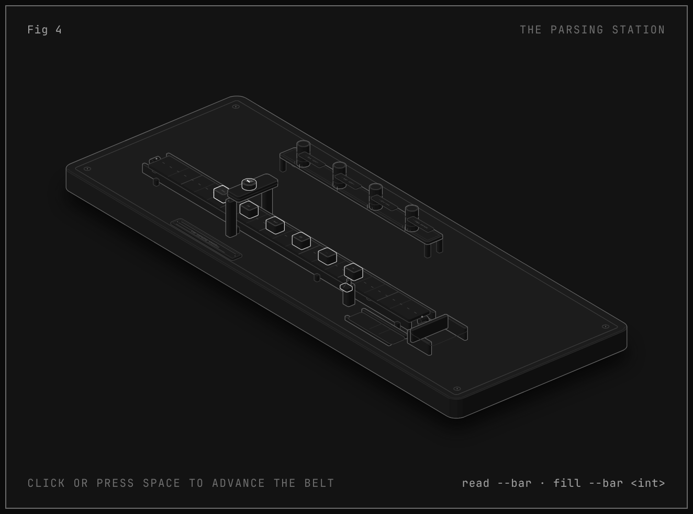
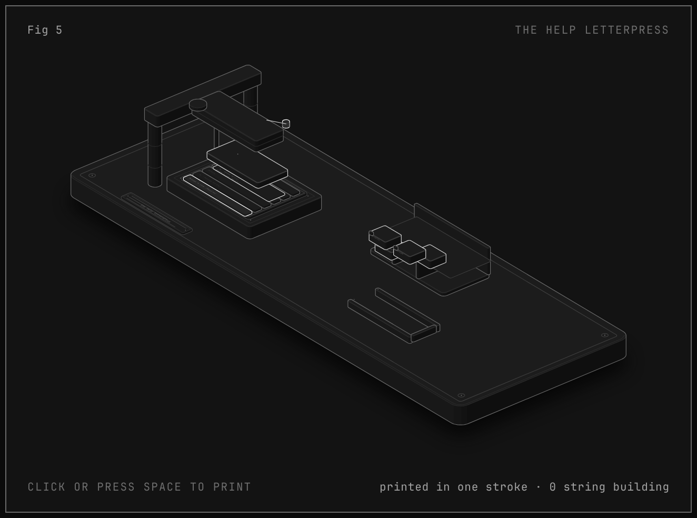
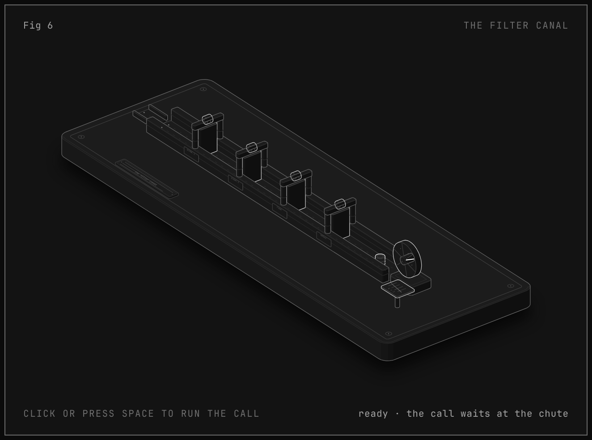
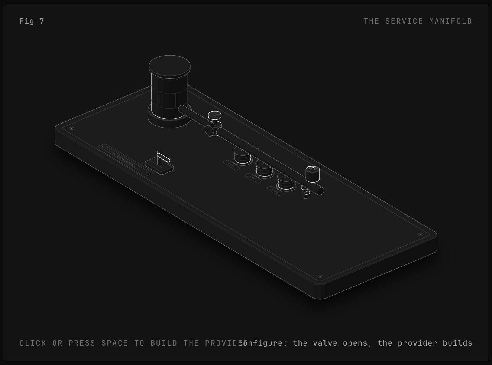
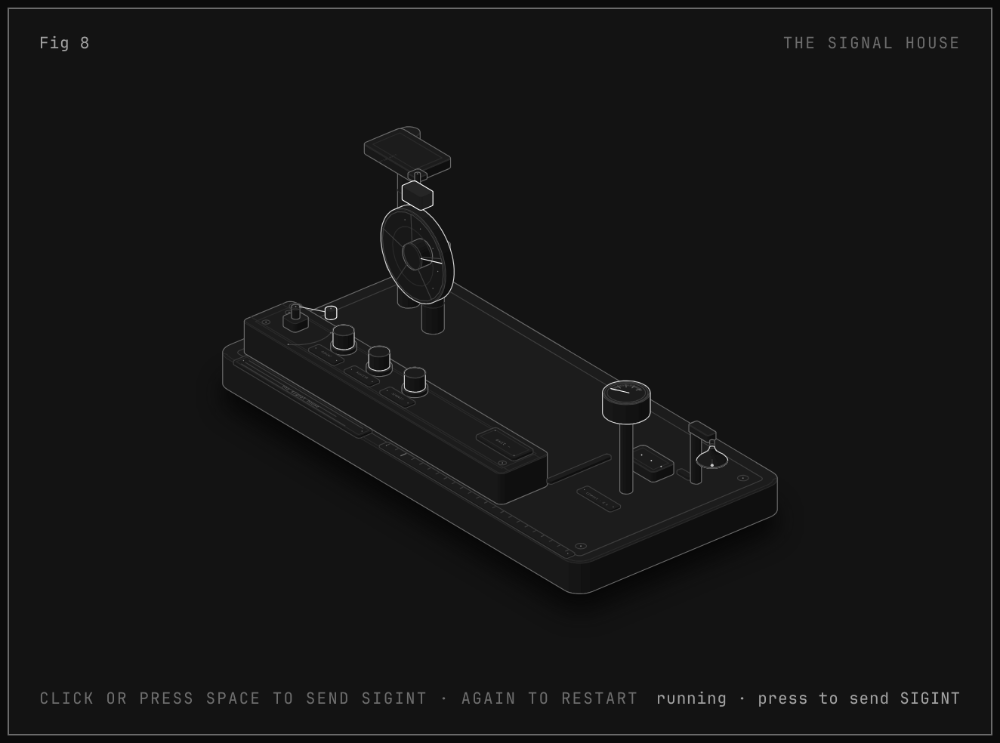
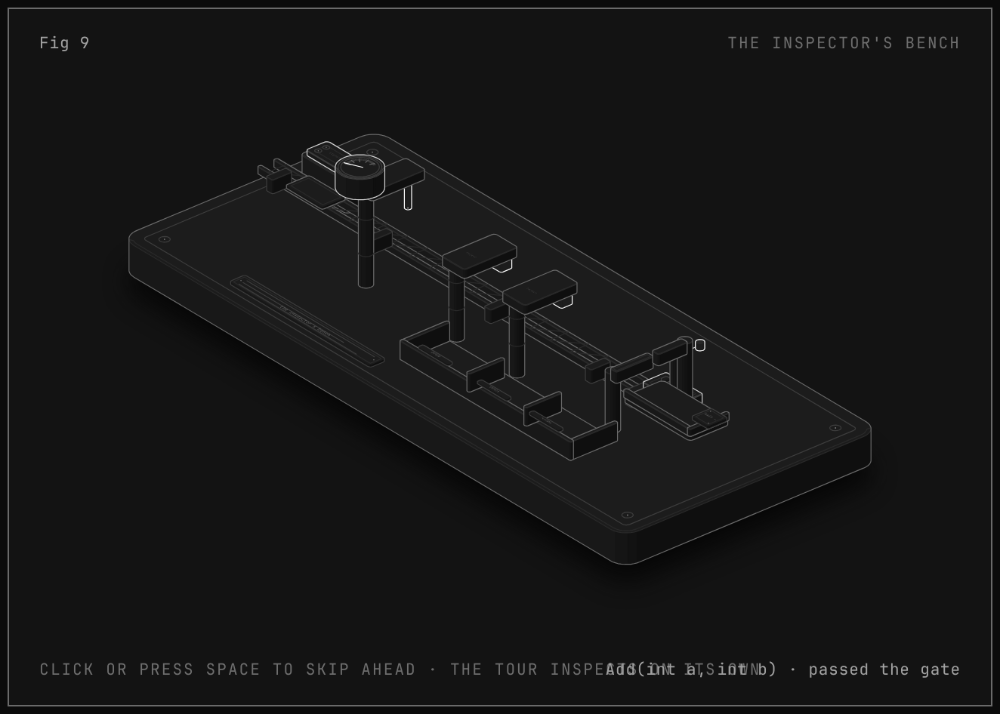
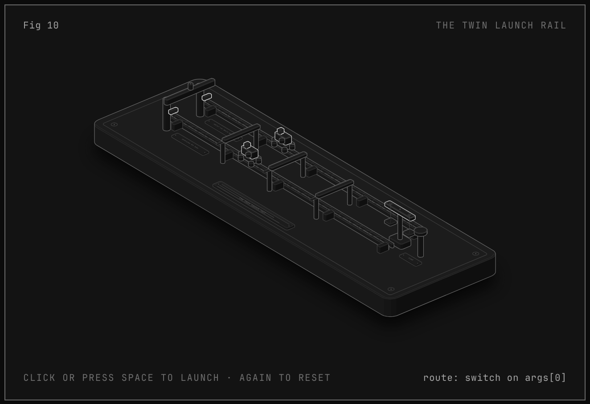

ConsoleAppFramework · anatomy
ten interactive isometric figures explaining how a zero-reflection CLI framework really works
ConsoleAppFramework is a Roslyn source generator that emits the whole entry point of your CLI — parse loop, routing switch, help text, filters, DI wiring — as ordinary C# into your own assembly. It is a function-like macro, not a reflection framework. Each figure below is a small physical machine whose working is one topic of the design. The full write-up is in docs/why-and-architecture.md.

Fig 1The machine line
Overview: a blueprint stand holds your lambda, a press emits the Run body, a switch routes it, a flywheel runs it, a bell rings the exit code.

Fig 2The code press
The source generator: a punch press that stamps the emitted Run body from your lambda like a receipt, line by line.

Fig 3The switch yard
Command routing: a string-constant switch over registered names, exact match first, an OrdinalIgnoreCase fallback second, help short-circuits first.

Fig 4The parsing station
One pass over argv: a reader walks the tokens once and drops each value into its slot — int.TryParse, ISpanParsable, enums, bool flags, arrays, params, and the
-- escape.
Fig 5The help letterpress
Help text composed at compile time from doc comments and emitted as raw string literals — printed in one stroke before routing ever happens.

Fig 6The filter canal
The middleware pipeline: global filters, class filters and method filters flow around the command in the order you register them, each layer allocating once.

Fig 7The service manifold
DI is opt-in by reference: ConfigureServices runs after routing and before parsing, the provider lands in a static, and it is disposed after the run.

Fig 8The signal house
Signals and shutdown: SIGINT, SIGTERM and SIGQUIT wired to one handler that cancels the run and arms a five-second fuse; exit 130 either way.

Fig 9The inspector's bench
Diagnostics and validation: duplicate options stamped CAF020, reserved help names stamped CAF019, and DataAnnotations checked at run time — exit 1.

Fig 10The twin launch rail
Performance parity by construction: the generated main is the switch you would have written by hand — two carts, one course, the beam stays level.